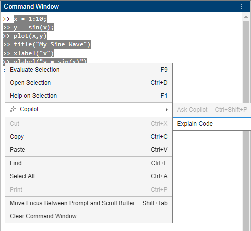
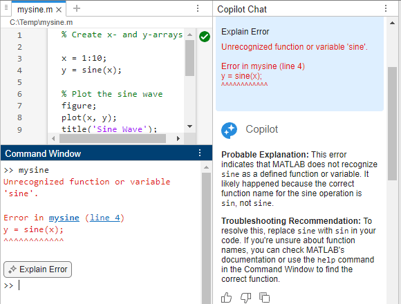

Explain Code Using MATLAB Copilot
MATLAB® Copilot provides generative AI–powered capabilities specifically for the MATLAB desktop environment. You can use MATLAB Copilot to help you better understand your code. For example, you can ask Copilot to explain code, explain error messages, or chat with Copilot to get explanations. Copilot responses are augmented with domain-specific material from MathWorks® documentation.
Explain Code in Editor
You can ask Copilot to explain a selection of code in the Editor or Live Editor. Highlight some code in your file and select Copilot > Explain Code on the Editor or Live Editor tab of the MATLAB Toolstrip. Or, right-click on the highlighted code and select Copilot > Explain Code from the context menu. In the Copilot Chat panel, Copilot explains the highlighted code.

Explain Code in Command Window
You can also ask Copilot to explain a selection of code in the Command Window. Highlight lines of code in the Command Window. You can highlight lines of code that you have already executed. Then right-click on the highlighted code and select Copilot > Explain Code from the context menu. In the Copilot Chat panel, Copilot explains the highlighted code.

Explain Error
When writing code in MATLAB, you might encounter errors in the Editor, Live Editor, or Command Window. You can ask Copilot to explain these errors.
To get an explanation of an error, click the Explain Error button that appears when you encounter an error. Copilot explains the error in the Copilot Chat panel. Typically, the response provides an explanation and troubleshooting recommendation. The exact response depends on the kind of error that you encounter.
When you work with code in the Editor or Command Window, the Explain Error button appears in the Command Window. When you work in the Live Editor, Explain Error appears in the Live Editor.

Chat with Copilot
Alternatively, you can chat directly with Copilot to ask questions to better understand code or error messages. For example, you can copy MATLAB code from another source, such as a webpage that displays a block of code. Then you can paste that code directly into the Ask Copilot text box in the Copilot Chat panel and ask Copilot to explain it.
After Copilot generates an explanation, you can ask follow-up prompts, such as:
Help me understand the code in the previous promptAdd comments to the code to make it more readable